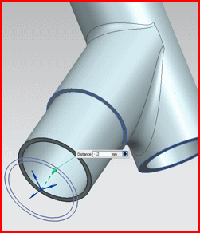

移动面
由于您可以直接更改模型，而不用考虑历史特征，也无需将模型送至原始设计工程师，所以这个命令在下游应用模块，比如加工和仿真中也很有用。
可以使用移动面命令来：
-
将一组面重新定位到不同位置以满足设计意图
-
重新定位装配的多个组件中的一系列面(所有组件与装配都必须在无历史记录模式下。)
-
更改无历史记录的钣金部件的折弯角
-
绕给定的轴和绕点旋转一个面或一组面。例如，更改键槽的角度位置
-
将整个实体的方位更改为不同的方位，而不考虑其历史记录
